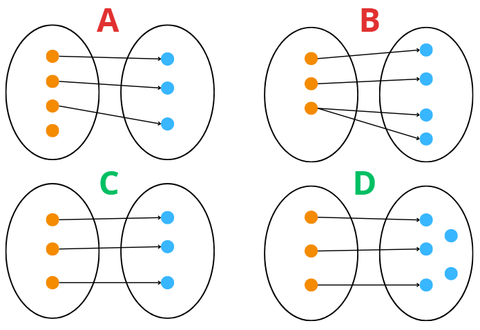

Funzioni#
1. Definizione di Funzione#
Una funzione È definita come una TERNA DI OGGETTI (Dominio, Codominio, Legge).
Una funzione È una corrispondenza f: A -> B tale che:
A È l’insieme di partenza, chiamato Dominio.
B È l’insieme di arrivo, chiamato Codominio.
La Legge (f) mette in corrispondenza gli elementi
Regola Fondamentale (Proprieta’ delle Corrispondenze)#
Ogni elemento di A deve essere messo in corrispondenza.
Ogni elemento di A È messo in corrispondenza con uno e un solo elemento di B.

In questa immagine si può notare con lettere scritte in verde le funzioni, in rosso non funzioni:
L’immagine A non è una funzione in quanto non tutti gli elementi del primo insieme vengono messi in corrispondenza.
L’immagine B non è una funzione in quanto il terzo elemento del primo insieme è messo in corrispondenza con più elementi del secondo.
L’immagine C è un insieme in quanto tutti gli elementi del primo insieme hanno tutti una sola corrispondenza con gli elementi del secondo.
L’immagine D è un insieme visto che non c’è nessuna regola che dice che tutti gli elementi del secondo insieme debbano avere una corrispondenza.
Grafico della Funzione#
Il Grafico di f (graph(f)) È un sottoinsieme del Prodotto Cartesiano A x B.
graph(f) = {(a, b) in A x B : b = f(a)}
Esempio: Prendendo come funziona A x B la relazione ℝ x ℝ (Cioè il piano cartesiano stesso) la coppia (a,b) di punti fa parte del grafico solo se soddisfa la funzione f e quindi se b = f(a).
Esempio Pratico: f(x) = x^2
La funzione f(x) = x^2 (Dominio ℝ, Codominio ℝ) agisce così:
f(2) = 4
f(-1) = 1
f(0) = 0
Il grafico di f è l’insieme di questi punti: graph(f) = {…, (-1, 1), (0, 0), (2, 4), …}
Immagine della Funzione#
Immagine di D sottoinsieme A: L’insieme f(D) = {f(x) : x in D}.
In poche parole: È l’insieme di tutti i valori di output (y) che la funzione produce quando prendiamo in considerazione SOLO un sottoinsieme (D) del dominio.
Esempio: Se f(x) = x^2 (Dominio ℝ) e consideriamo il sottoinsieme D = [1, 2] (solo i numeri tra 1 e 2).
f(D) = [1, 4]. (L’immagine È l’insieme di tutti i numeri tra 1^2=1 e 2^2=4).
Immagine della Funzione (Imm(f)): L’immagine dell’intero dominio, Imm(f) = f(A).
In poche parole: È l’insieme di tutti i valori di output (y) che la funzione puo’ raggiungere in assoluto. È la proiezione del grafico sull’asse y.
Esempio: Se f(x) = x^2 (Dominio A=R, Codominio B=R).
Imm(f) = [0, +∞). (La funzione non puo’ mai produrre numeri negativi ma parte da 0 e arriva ad infinito).
Relazione chiave: Imm(f) È sempre un sottoinsieme del Codominio (B).
Imm(f) e B sono uguali solo se la funzione È suriettiva.
2. Proprieta’ delle Funzioni#
A. Iniettivita’#
Definizione: Una funzione f: A -> B si dice iniettiva se a elementi distinti del dominio corrispondono elementi distinti nel codominio.
Se x1 != x2, allora f(x1) != f(x2).
Criterio Grafico: Ogni retta orizzontale incontra il grafico in al massimo un punto.

La funzione a sinistra è iniettiva in quanto tracciando delle rette orizzontali non troveremo mai due punti di contatto con il grafico mentre la funzione a destra non è iniettiva in quanto si possono trovare delle rette orizzontali che toccano due volte il grafico.
B. Suriettivita’#
Definizione: Una funzione f: A -> B si dice suriettiva se l’immagine della funzione coincide con l’intero codominio.
Per ogni y in B, esiste ALMENO UN x in A tale che f(x) = y.
Imm(f) = B.
Criterio Grafico: Ogni retta orizzontale tracciata nel codominio incontra il grafico in almeno un punto.

La funzione a sinistra è suriettiva in quanto tracciando delle rette orizzontali troveremo sempre almeno un punto di contatto nel grafico mentre la funzione a destra non è suriettiva in quanto si possono trovare delle rette orizzontali che non toccano mai il grafico.
C. Biettivita’ (Invertibile)#
Definizione: Una funzione È biettiva se È SIA iniettiva che suriettiva.
Criterio Grafico: Ogni retta orizzontale incontra il grafico in UN SOLO punto.

La funzione a sinistra è biettiva in quanto tracciando delle rette orizzontali troveremo sempre solo un punto di contatto nel grafico mentre la funzione a destra non è biettiva in quanto si può vedere che le rette orizzontali rosse toccano più di una volta il grafico.